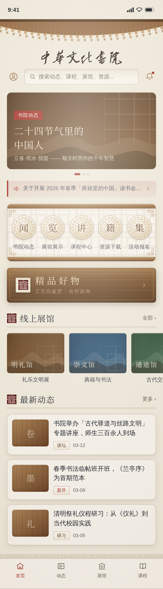
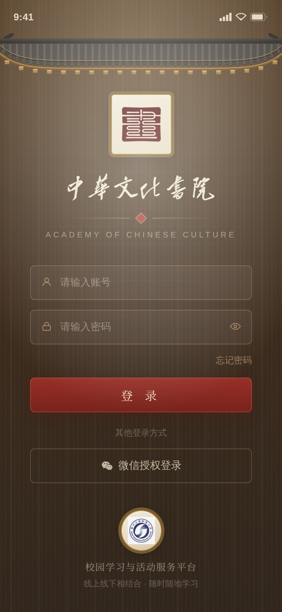
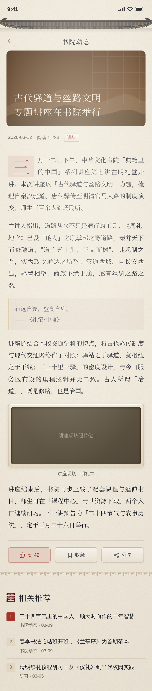

书院 · 檐棂印
中华文化书院小程序视觉方案。这份说明讲清楚每一处为什么这样做——一幅通栏的青绿山水、三件记忆装置、一套配色、五种材质，以及它们各自要解决的问题。



一要解决的问题
审看反馈是：现有界面不是不好看，是看不出这是书院——不够「书香门第」，一眼留不下印象。
诊断下来，缺的不是装饰，是主体。
参照物是故宫博物院小程序。它之所以让人一眼记住，并不在于多精致，而在于它贴着自己的主体：紫禁城的建筑、院藏的文物。换句话说，它的视觉就是它自己。
我们的主体是「中华文化书院」——一个概念，不是一处建筑。由此定下两条边界：
· 不照搬故宫。故宫的识别度来自它自己的藏品与宫殿，借过来只会得到一个「像博物馆的东西」。
· 不迁就校园实景。书院是虚拟概念，线下校区是现代建筑，硬去对应只会两头不着。
目标因此很明确：让人一眼认出「这是书院」，并且耐看。
二卷首：一幅青绿山水
审看时指出「特别对故宫博物院那种感觉情有独钟」。那种感觉的来源不是纹样，是结构：一张院藏的画通栏铺满、一直顶到状态栏后面，内容以一张纸的形式从下面浮上来压住画脚。这一条是可以学的，而且学的是做法不是画面。
画的内容学不来，但画种可以。青绿山水是石青、石绿两种矿物颜料画在绢上的，它自带三条规矩：远淡近浓、山脊勾泥金、山与山之间留白。于是卷首是一幅我们自己生成的青绿山水——四层山脊，每层四件事。
| 要素 | 做法 | 为什么 |
|---|---|---|
| 山形 | 峰的两侧各加一个「肩」，并随机带子峰 | 只有峰谷交替时曲线只能是正弦，出来是波不是山 |
| 设色 | 每一层自己也是渐变：山头压到本层石青，山脚退到下一层的浅色 | 平涂色块是矢量图，分染才是画 |
| 皴 | 近两层落披麻皴，从峰肩往下拖 | 皴是中国山水画和「色块山」唯一的区别 |
| 点景 | 中景一排米点树，近景两三丛松 | 米点是米芾的办法，这个尺寸下比画树形准确 |
四季
同一幅画换四套颜料：春青绿 / 夏烟雨 / 秋浅绛 / 冬雪霁。
画不用重画。山形、皴、点景、勾线全部走变量，一个季节换的只是颜料——这正是青绿与浅绛在传统里的关系：同一套笔墨，换一套矿物色。

二级页用同一套卷首
资讯详情也是「一幅画顶到最上缘 + 檐叠在画上 + 纸从画脚浮起」，只是矮 100px（这一页的主角是正文），并且换了一幅画——同一支笔、不同一张画，比两页共用一张图更像书院自己的东西。
标题不压在画上，落到纸上第一行。理由和封面图是同一条：画是用户传的，标题的可读性不能交给它。导航标题与返回键都垫一方半透明的纸——实测直接压在近景石青上只有 3.16:1，垫上之后即便底下是纯黑封面图也有 8.15:1。
三三件记忆装置
记忆点必须少而重复。堆十种纹样等于没有纹样。整套只立三件，外加几件配角。
檐
为什么是檐。讲堂、山门、书院——中式建筑最先被认出来的永远是屋顶。更重要的是，它可以出现在每一页的同一个位置。重复即记忆。
它是由构件拼起来的，不是一条装饰线。
起翘曲线用八次方。真屋檐正面看是「中间一条近乎平直的檐口，只在最外两端急促翘起」。二次、三次方会做成整幅下垂的弧——远看就是一块挂着的布。这一版曲线让中间 70% 几乎不动，翘全部集中在最外侧，才是翼角。
二级页的檐矮一半：身份保留，版面不被吃掉。
瓦是青灰的，不是木色的。屋顶本来就不是木头。给瓦自己的黛青色调之后，木构件才衬得出来，整页也不会一片棕。
棂
用冰裂纹，不用步步锦。步步锦是规整的几何，画出来很容易被读成棋盘格或网格纸。冰裂是无规则的，一眼就是中式窗棂或瓷器开片，不会认错。
它是结构，不是贴花。冰裂纹铺在功能入口区的「格心」里，而那一整块被做成一扇槅扇门：上下枋夹着格心，四角有角叶。装饰与结构合一——这一点是和市面上「在旁边贴一朵花纹」的中国风拉开距离的地方。
印
朱砂取自校方印章本身。所以全站的按钮红、栏目印、选中态、标签，永远是同一个红——不会出现两种红打架。它是全站唯一的高饱和色，只出现在小面积。
钤印不能是印得完美的。真印章有三个特征，缺一件就成了「贴了张图片」：
四配角装置
瓦当与小篆
五个功能入口装在同一枚瓦当里，当心是小篆单字：闻 · 览 · 讲 · 籍 · 集。
瓦当按文字瓦当的规制做：外缘、联珠纹、弦纹、界格。汉代瓦当分两路，一路用纹样（莲瓣、云纹）占满当面，一路是文字瓦当（「长乐未央」那种），中间是字、四周是界格——两者不混。既然当心要放字，就按文字瓦当来。
小篆字形由校方提供，取自《说文解字》小篆，是玉箸一路（笔画粗细均匀、体势端正对称），与这套细线几何完全合拍。
当面做成金镶玉。玉不是均匀的半透明体——有絮、有棉、有两处不在同一个位置的高光，这点不匀才是玉和塑料的分界。所以当面是：两道高光 + 一层低频的「玉花」噪声 + 一道从青白到豆青的四段径向渐变。外缘、联珠、弦纹、界格全部改成金，弦纹里侧留一道暗线当「坎」——金是镶上去的，不是画上去的。
字也跟着改：不再是阴刻的陶字，而是嵌在玉里的金字——字身走一道由亮金转暗金再回亮的渐变（金件的受光就是这样），上沿一道暗坎、下沿一道白反光，于是字是沉在玉面里的。
匾额
「精品好物」做成一方浅木阴刻匾。
这里改过一次。上一版是黑漆金字匾——规制没错（书院祠堂的匾本来就是这个），但整页转向清新典雅之后，它成了第一屏唯一的深色块，自己变成了那个「古板」的点。
换浅木之后金字失去对比，所以字也跟着换：阴刻填墨。这本来就是木匾的做法，描金是黑漆匾的做法，两者不混。字是墨色，字的下沿有一条木本色的高光——那是刻槽的下壁在受光；少了这条高光，字就只是印上去的。
框与面分两档：框是竖纹（框条竖着开料）、比面深两档；面是横纹（匾板是横着的一块整料）、微微凹进去。内框是一道刻出来的槽，金线躺在槽里。
冰裂棂
五个入口背后是一扇冰裂纹窗棂。棂条不是单线——每根是四道叠起来的：落影、暗边、条身、顶部高光。四道叠完，条子才是有厚度的木，而不是画在纸上的线。
祥云
深色块底部压两层祥云，代替常见的波浪——波浪读起来是山水或海浪，都不是书院的词。
一朵祥云 = 一簇大小不一的圆瓣 + 云卷 + 沿上缘的内轮廓双钩。连续均匀的圆弧带做出来是花边，不是云：真祥云是一团一团断开的，团里还有卷。
五配色
全站颜色分七族，每一处都从令牌取，不允许写死。这条由构建期护栏强制执行（见第九节）——第一次跑出来抓到 43 处写死的棕色。
木 · 浅原木色阶
青 · 天青／影青
山 · 青绿山水的四层矿物色
墨 · 深色面
其余四族
三条关键判断
① 木色色相钉在 36–38°。咖啡与胡桃在 25° 上下，偏红——那是老家具的色相。金丝楠、白橡偏黄。这一条就是「老气」与「上档次」的分水岭。
| 版本 | 色值 | 色相 | 饱和 | 明度 | 观感 |
|---|---|---|---|---|---|
| 最初 | #6B4A32 | 25.3° | 36% | 31% | 咖啡 |
| 中途 | #9A6E48 | 27.8° | 36% | 44% | 还是咖啡 |
| 现在 | #B9A383 | 36.0° | 28% | 62% | 浅原木 |
② 只调色相是没用的。前两轮只在色相上挪（25°→27.8°→34.5°），明度、饱和度、面积一个没动，所以审看时连着说了三次「木色好像还是没什么变化」——他说得对。
「老气」的完整配方是：深 + 高饱和 + 偏红 + 铺大面。
这一版四条同时改：明度提上去、饱和度压下来、深色面换掉、木头退回到裱边与枋、包角、椽头、棂条这些构件上，不铺大面。
③ 「古板」是可以量出来的，量完再改。审看时指出「显得有些古板，尤其是色调」。没有凭感觉改，先量了第一屏：
| 指标 | 改版前 | 说明 |
|---|---|---|
| 深色块面积 | 36% | 第一屏三分之一是深色 |
| 彩色像素色相中位数 | 40° | 整页挤在暖黄区 |
| 冷色像素占比 | 1.9% | 一个冷色都没有 |
三个数字指向同一件事：整页又深又暖又没有对照。暖 + 深 = 陈旧；清新必须有冷色。天青这一族就是为这三个数字加的，它同时接管了原先用墨铺的那些「图位」。
顺带一条教训：判断冷暖不能用 HLS 的饱和度。纸色 #F5F2E9 在 HLS 里是 38% 饱和，看着像个高饱和色，其实彩度只有 5%——近白色会把 HLS 饱和度撑爆。要用彩度 (max−min)/255。
展馆分类色用同一个明度层级，只在色相上各偏一点：天青 / 苔绿 / 影青。原先那组蓝绿饱和度高出一大截，三张封面摆在一起像来自三个地方。
六材质与光
光从上方来。
阴刻（凿进去）＝ 上沿暗、下沿亮。
阳刻（凸出来）＝ 上沿亮、下沿暗。
方向一旦反了，立刻就是「贴纸」。这一条是所有立体效果的总开关。
纹理全部是 CSS 渐变与内联 SVG 噪声，零位图。可换色、可主题化、不占包体积——这对小程序 2MB 的主包限制是硬要求。
木纹用三层不同周期（5 / 23 / 13）叠加，错开周期才不会看出规则条纹；大面积木面另配一组宽周期年轮再打散一次。
状态与反馈
幅度一律很小（1px / 0.6%）——大了就成弹簧。
毛边
只给「一张纸」用：题签、钤印那方纸。界面里的卡片是印刷品，边就该是齐的。抖幅只有一两个百分点——毛边是纸纤维的断口，不是撕破的口子。
七上了封面图之后
这是最实际的一个问题，答案是部分会被盖住，而且是设计好的。
会被盖住
- 画心里的祥云
- 画心里的木纹底
它们本来就在「图的位置」上。
盖不住
- 裱边木纹
- 四角包角
- 右下压角印
- 竖排题签
- 标题绢条
- 题签签条
做法是把纹样一律挪到画心之外，或压在画心之上：
以后每张封面图都会自动带上包角和一枚朱印，看起来就是一张裱好的画。
八字
正文与标题：内嵌宋体子集
| 字体 | 思源宋体 Noto Serif SC，SIL OFL 1.1，可商用、可嵌入、可子集化 |
| 子集 | 4009 字符（GB2312 一级 3755 + 项目全语料 + 书法繁体雅字 + 标点），单字重 400 |
| 体积 | woff2 689 KB → base64 919 KB |
| 主包 | 1530 / 2048 KB，余量 518 KB |
为什么内嵌而不用网络字体接口。后者只收网络地址，要配合法域名白名单，还必须返回 Access-Control-Allow-Origin: *（设成 servicewechat.com 时 iOS 能过、安卓挂），荣耀 / vivo 等机型对字体跨域的校验更严——做不到「所有设备都正常显示」。内嵌进代码包则不走网络、不需要白名单、没有机型分裂。
回退栈保持完整：字体万一没生效就退回系统字，不会白屏、不会豆腐块。
入口：小篆字形
校方提供的《说文》小篆 SVG，清洗做了两件事：
· 剔除水印——原始文件每个字都夹着两条近白色路径，白底上看不见，落到纸色或深色底上会显形。
· 归一化——字面统一到 1000×1000、居中占 760，五个字的高度与线宽这才一致。
九可访问性与护栏
所有前景／背景组合逐对实算（WCAG 相对亮度），16 项全部达标，0 项不合格。
| 用途 | 对比度 | 标准 |
|---|---|---|
| 正文（纸底 15px） | 12.84:1 | AA |
| 栏目标题（卡片 19px） | 14.16:1 | AA |
| 首图标题（墨底 22px） | 8.98:1 | AA |
| 匾额金字（黑漆 21px） | 8.59:1 | AA |
| 次按钮文字（石青 14px） | 7.03:1 | AA |
| 题签文字（签条 12.5px） | 6.32:1 | AA |
| 瓦当篆字（陶饼） | 5.61:1 | AA |
| 登录按钮文字（朱漆 16px） | 5.39:1 | AA |
| 匾额副题（黑漆 11px） | 5.20:1 | AA |
| 输入框占位字（凹槽 13.5px） | 5.13:1 | AA |
| 说明 / 时间（纸底 11–12px） | 4.86:1 | AA |
设计过程中有四处是算出来才发现不合格的，肉眼完全看不出来：说明文字曾只有 3.51、输入框占位字曾只有 3.23、匾额副题曾只有 3.70、深棕底上的标题曾只有 4.13。都已修正。
两条构建期护栏
设计要能长期不走样，靠的不是自觉，是护栏。这类错误人眼查不出来，只能靠机器挡。
十校方素材怎么用
十一还没定的两件事
靛青备选
目前是把主推方案换个颜色，材质语言没跟着换（现在是「蓝色的木纹」）。真要走靛青，材质应换成青砖／靛染／青瓷开片。
实拍素材
首图与封面现在是纯色 + 祥云占位。若能提供书院活动、讲座现场、书法作品、图书室的实拍图，这几块换成照片会明显更厚——装裱那一套就是为此准备的。
稿件：主页 · 登录页 · 资讯详情 · 已上传封面图对照 · 控件状态演示 · 靛青备选
屋檐、瓦当、冰裂纹、祥云、毛边由脚本按数学摆放生成——沿曲线排布的瓦件、绕心旋转的纹样、抖动网格，手写这类坐标必然出错。